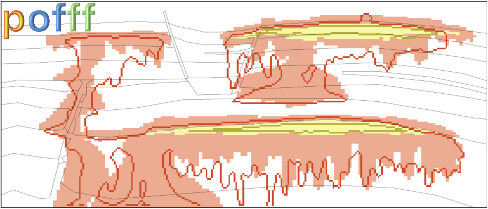

Introduction
Installation
Configuration file
Examples
pofff Python API
Output folder
Contributing
Related
About pofff
pofff
Index
Index
B
|
C
|
D
|
E
|
F
|
G
|
H
|
I
|
L
|
M
|
O
|
P
|
R
|
S
|
W
B
before_emd() (in module pofff.jobs.metric)
benchmark() (in module pofff.utils.runs)
(in module pofff.visualization.benchmark)
boxes() (in module pofff.utils.mapproperties)
C
calculate_emd() (in module pofff.jobs.metric)
check_facie1() (in module pofff.utils.mapproperties)
compact_format() (in module pofff.utils.writefile)
compute_m_c() (in module pofff.jobs.data)
corner() (in module pofff.utils.mapproperties)
corner_point_handling_fluidflower() (in module pofff.utils.mapproperties)
create_corner_point_grid() (in module pofff.utils.writefile)
create_from_summary() (in module pofff.jobs.data)
D
data() (in module pofff.utils.runs)
dense_data() (in module pofff.jobs.data)
E
error_table() (in module pofff.visualization.error_table)
ert() (in module pofff.utils.runs)
everest() (in module pofff.utils.runs)
F
figures() (in module pofff.visualization.everert)
find_best() (in module pofff.visualization.everert)
find_optimal() (in module pofff.visualization.everert)
flow() (in module pofff.utils.runs)
G
generate_arrays() (in module pofff.jobs.data)
generate_segment_map() (in module pofff.jobs.metric)
get_cellmaps() (in module pofff.utils.mapproperties)
get_lines() (in module pofff.utils.mapproperties)
getpolygons() (in module pofff.utils.mapproperties)
grid() (in module pofff.utils.mapproperties)
H
handle_thickness_map() (in module pofff.utils.inputvalues)
I
initialize_ert() (in module pofff.visualization.everert)
L
load_parser() (in module pofff.core.pofff)
(in module pofff.visualization.benchmark)
(in module pofff.visualization.everert)
load_points() (in module pofff.visualization.maps)
M
main() (in module pofff.core.pofff)
(in module pofff.jobs.data)
(in module pofff.jobs.metric)
make_figures() (in module pofff.visualization.everert)
map_to_report_grid() (in module pofff.jobs.data)
maps() (in module pofff.visualization.maps)
module
pofff
pofff.core
pofff.core.pofff
pofff.jobs
pofff.jobs.data
pofff.jobs.delete
pofff.jobs.metric
pofff.utils
pofff.utils.inputvalues
pofff.utils.mapproperties
pofff.utils.runs
pofff.utils.writefile
pofff.visualization
pofff.visualization.benchmark
pofff.visualization.error_table
pofff.visualization.everert
pofff.visualization.maps
pofff.visualization.sparse_values
O
opm_files() (in module pofff.utils.writefile)
P
para_dist() (in module pofff.visualization.everert)
plot_cumulative_misfit() (in module pofff.visualization.everert)
plot_optimization_details() (in module pofff.visualization.everert)
plot_optimization_results() (in module pofff.visualization.everert)
plot_parameters() (in module pofff.visualization.everert)
pngs() (in module pofff.visualization.maps)
pofff
module
pofff() (in module pofff.core.pofff)
pofff.core
module
pofff.core.pofff
module
pofff.jobs
module
pofff.jobs.data
module
pofff.jobs.delete
module
pofff.jobs.metric
module
pofff.utils
module
pofff.utils.inputvalues
module
pofff.utils.mapproperties
module
pofff.utils.runs
module
pofff.utils.writefile
module
pofff.visualization
module
pofff.visualization.benchmark
module
pofff.visualization.error_table
module
pofff.visualization.everert
module
pofff.visualization.maps
module
pofff.visualization.sparse_values
module
positions() (in module pofff.utils.mapproperties)
postprocess() (in module pofff.utils.runs)
postprocessing() (in module pofff.visualization.benchmark)
(in module pofff.visualization.sparse_values)
process_input() (in module pofff.utils.inputvalues)
R
read_hm() (in module pofff.visualization.everert)
read_opm() (in module pofff.jobs.data)
read_results() (in module pofff.visualization.everert)
refinement_z() (in module pofff.utils.mapproperties)
S
segment() (in module pofff.visualization.maps)
sensors() (in module pofff.utils.mapproperties)
sparse_data() (in module pofff.jobs.data)
structured_handling_fluidflower() (in module pofff.utils.mapproperties)
W
wells() (in module pofff.utils.mapproperties)
write_dense_data() (in module pofff.jobs.data)
write_keywords() (in module pofff.utils.writefile)
write_sparse_data() (in module pofff.jobs.data)